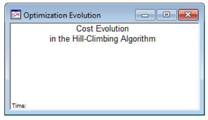
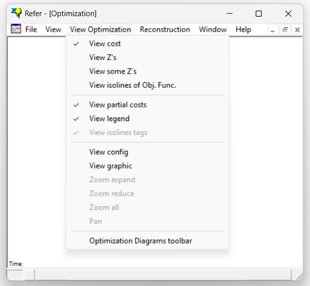

1.5.3.6 Optimization Window
The Optimization window is designed to display information related to the optimization-based process of inflation, including details of the ongoing adjustments and refinements during the inflation phase

The information being displayed is controlled by the Optimization Process toolbar
The Optimization window is linked to a specific toolbar which controls the information being displayed.
